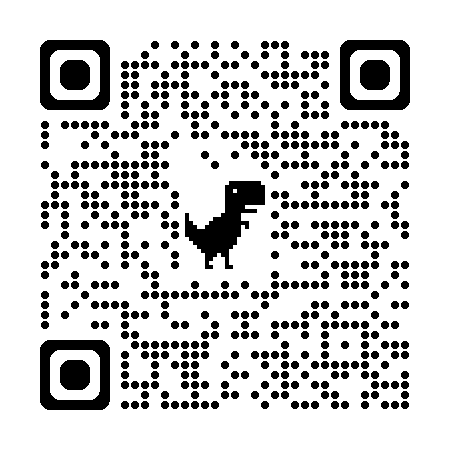
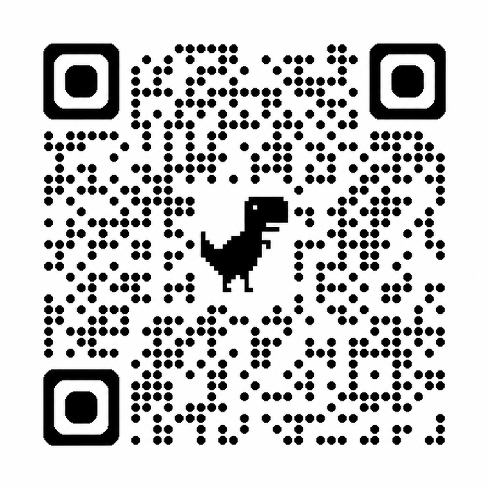

Faça sua Inscrição Oficial
Aponte a câmera do seu celular para o QR Code ao lado para preencher o formulário oficial da turma do curso.
Nome Completo sem Abreviações
O nome digitado no formulário será impresso de forma automática no seu certificado oficial.
Campos Obrigatórios (*)
Preencha todos os itens assinalados com asterisco para validação cadastral junto ao SAMU.

Confirmação de Frequência
Escaneie o QR Code com seu celular para abrir a lista de presença e informe o código da turma abaixo.
Digite 5588 na pergunta solicitada
Frequência de 100% Obrigatória
A presença integral na capacitação é pré-requisito indispensável para a liberação da certificação Lei Lucas.
Emissão do Certificado Oficial
Ao concluir a capacitação e registrar sua frequência, acesse o portal de certificados apontando a câmera para o QR Code.
Validade Legal da Lei Lucas (Lei Federal 13.722)
Certificado oficial de Primeiros Socorros no Ambiente Escolar emitido pelo SAMU 192 e NEU.
Download do Documento em PDF
